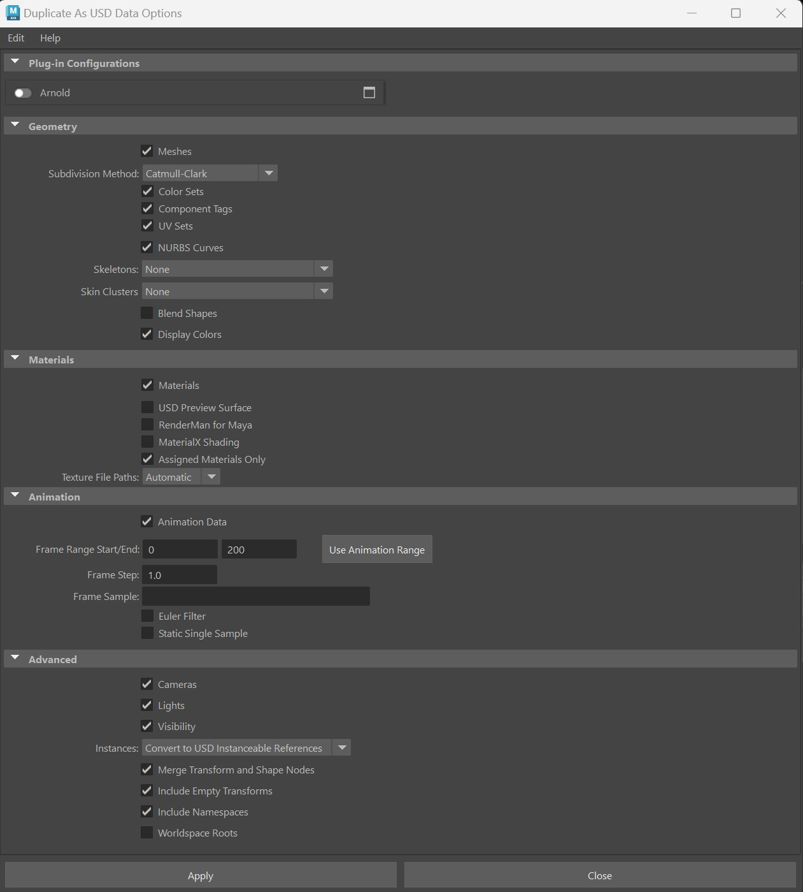

Work between USD and Maya data interchangeably
Working with USD data and Maya data in conjunction and translating between the two enables you to leverage both USD and all of Maya's animation tools. To amplify your workflow with the mixed data model of Maya and USD data, you can use the Maya Outliner to translate data back and forth between Maya and USD.
When translating data, track the progress of your change with the progress bar in the bottom left corner of your screen.
Starting with USD data
- Using the Outliner and the Outliner Context Menu, you can right-click any prim in the Outliner and choose to Edit as Maya Data or Duplicate as Maya Data.
- You can also access the Marking Menu in the Viewport with a selected prim to activate the option to Edit as Maya Data.
PrimTypes that currently have registered import/export translators can be found on the official MayaUSD GitHub repository. Remember that for a PrimType to have Edit as Maya Data functionality, it requires both an import and export translator.
- Example C++ prim translators:
- cameraWriter.h (export)
- cameraReader.cpp (import)
Edit as Maya data
Pull/Push workflow
Select a prim > right-click > Edit as Maya data (PULL)
Tip: Select the " " beside Edit as Maya data to configure your options. This box opens up the standard Maya options from the import dialog. Here you can configure plug-in configurations and customize an import with prim readers, shader readers, chasers, and more. This gives you and your studio greater control over the Edit As Maya Data workflow.
" beside Edit as Maya data to configure your options. This box opens up the standard Maya options from the import dialog. Here you can configure plug-in configurations and customize an import with prim readers, shader readers, chasers, and more. This gives you and your studio greater control over the Edit As Maya Data workflow.Once a prim is pulled the following occurs:
- USD Layer Editor: The session layer is edited with application state data. To unhide your session layer and learn more about working with session layers, see USD Layer Editor Options. This allows edits to be cleared easily as data interchanges between Maya and USD. Your target layer in the USD Layer Editor will remain unchanged until you Merge Edits to USD.
- Viewport: Your chosen prim is deselected once data caching/translation into Maya data is complete.
- Outliner: Your pulled data branch lines will be grey and your pulled object will be italicized. Note that all decendant nodes are pulled as well. Once pulled, the maya object and children are all locked.
You can undo and redo edits while manipulating pulled data.
The following options are available for once you finish editing as Maya data:
Select Merge Maya Edits to USD (PUSH), the following occurs:
The connected prim with edits are merged back to USD. Once pushed, the connected prim is visible in the viewport containing the new edits. The new edits on the prim are authored on the layer that has the editTarget.
After merging your edits to USD, if you go into the same prim and select Edit as Maya Data again, you will not see the construction history from the previous pulled Maya object.
Important: When merging edits to USD, all edits will be placed on your current edit target layer. The session layer will be cleared of all application state data. Also, if 'Merging to USD' on a stronger layer (including the session layer), the prim is specified as an over. If you are 'Merging to USD' on a weaker layer, the prim is specified as a def.
Select Discard Maya Edits (CLEAR), the following occurs:
- The pulled Maya object diappears and in it's place in the USD hierarchy you will see the original prim that was connected. This action is undoable.
usdEditasMaya. If you have an orphaned Maya object (if a USD ancestor is deactivated/deleted, switched via a variant or unloaded from your scene via payloads), there will be limited options for your usdEditAsMaya set. You will only be able to Discard Maya Edits in this case. Orphaned data appears greyed out and with a red x icon on the pulled prim in your usdEditAsMaya set.The Pull/Push methodology & common use cases
Pulling and pushing your data back and forth in MayaUSD allows you to access twice the workflows. This process works thorough the backend like merging and branching edits; a cached version of edits are created locally on your drive and once complete, are discarded or merged back (with undo feature implemented in the process). This feature enables (but is not limited to) the following edits for USD data pulled into Maya data:
- Editing and adding UV tags
- Sculpting point positions
- Modifying a material assignment
- Animating a camera
Duplicate as Maya data
Copy workflow
- Select a prim > right-click > Duplicate as Maya data (COPY)
- Once a prim is copied the following occurs:
- Importing: All aspects of your selected prim are imported as Maya data. The USD data gets imported into Maya nodes, independent of the import options.
- Interface: Your newly created Maya node is selected in the Outliner and Viewport.
- Undo is supported in this workflow and there are no edits within the USD Layer Editor.
Copy methodology & use cases
The copy workflow enables you to leverage USD into your Maya toolset by providing an extensible and funtional reference point for your work. This feature enables (but is not limited to) the following capabilities for Maya data as a result of USD data:
- Using USD data as a reference for Maya modeling data
- Using USD data and bringing it into Maya data to create a live surface
- Debugging a translation
Starting with Maya data
Duplicate as USD data
- If a stage node exists in your Maya scene file (see Create a USD Stage), the Outliner Context Menu will include the option Duplicate as USD Data for your currently selected Maya node. To duplicate a Maya object as USD data, right-click on the Maya node in the Outliner and choose Duplicate as USD Data. You can also duplicate multiple objects as USD data simultaneouly by selecting the nodes, right-clicking on one of them, and selecting Duplicate as USD Data.
- If multiple stages are present in your scene, you will be able to select and choose which stage to place the duplicate of your Maya node in. ![- When you select materials and choose Duplicate as USD Data, only the materials, not the meshes, will be duplicated.] ![- When duplicating materials to a USD stage that lacks existing materials, the duplicated materials will be added to the stage under a newly created material scope.]
- You can customize the Duplicate as USD Data settins by right-clicking on the prim and selecting Duplicate as USD Data > Options. In the Duplicate As USD Data Options window, you can specify what data you want to include for the duplication. 
- You can also access the Marking Menu in the Viewport with a selected Maya node to activate the option to Duplicate as USD Data.
Copy workflow
- Select a Maya node (when a USD stage is present in the scene) > right-click > Duplicate as USD Data
- If multiple stages are present in the scene, you can select which one to duplicate the data into from the stages presented.
- Select Options... to choose the way your Maya objects are exported to USD. The Duplicate as USD Data window appears with the same options as the typical export options; including Geometry, Materials, Animation and Advanced settings. In this window you can set your preferences for the export. After building out the scope of your options, select Apply to apply your settings or Close to cancel the operation. Important: When you duplicate edits to USD, the options in this dialog that you select can persist in Maya memory from the last time you exported and even in your last Maya session. Ensure you check these settings each time as your selections can be saved in Maya. You can also select Edit from the top left menu in this dialog to Save Settings or Reset Settings for any Maya data export processes.
- Once a maya node is copied, the following occurs:
- Exporting: The Maya selected object in its entirety gets exported to its USD equivalent, which is created at the root of the stage.
- The original Maya object remains as it was.
Copy methodology & use cases
The copy workflow enables you to leverage USD into your Maya toolset by providing an extensible and functional reference point for your work. This feature enables (but is not limited to) the following capabilities for USD data as a result of Maya data:
- Using Maya modeling data as a reference for USD data
- Creating an extensible workflow from an existing limited workflow in Maya
- Debugging a translation
Push/Pull method limitations
USD data is unaware of Maya data inside in the mixed-data model. Thus, when Maya data is inside a USD hierarchy, its visibility isn't inherited from its USD ancestors. Additionally, when Maya data is inside a USD hierarchy, reframing the Viewport on its USD ancestors will not include Maya data. Transforms can therefore misconfigure when animating pulled USD data.